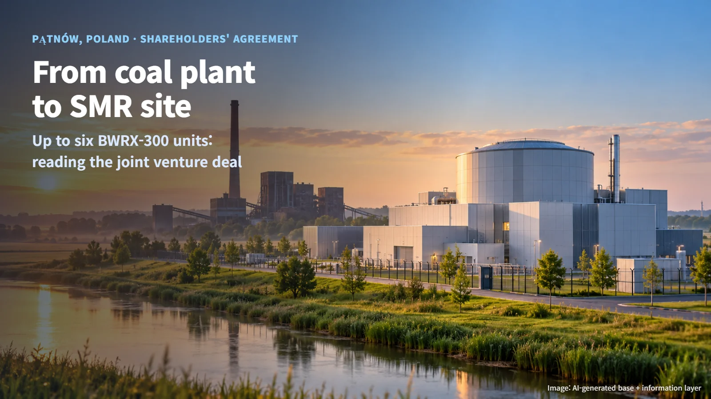
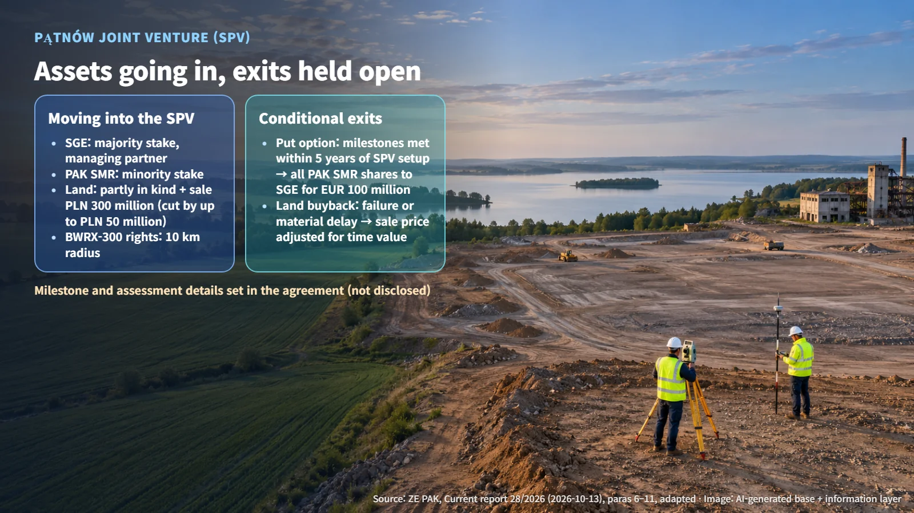

Poland · SMR Joint Venture
From Coal Plant to SMR Site: Reading Poland's Pątnów Joint Venture Agreement
A shareholders' agreement signed on October 13, 2026 sets out how land and BWRX-300 rights will move into a joint venture at a former coal site, and which conditional exits it keeps open.
When a nuclear headline announces that an agreement has been signed, it can sound as if construction is about to begin. In practice, a single bundle of contracts usually holds several stages stacked on top of one another. The Pątnów small modular reactor agreement signed in Poland on October 13, 2026 is a good example. Following its terms shows where the project stands today and what still lies ahead.

Up to Six SMRs on a Former Coal Site
Poland's ZE PAK announced that on October 13, 2026 it signed a shareholders' agreement for the Pątnów small modular reactor (SMR) project with its subsidiary PAK Pątnów 2 (PAK SMR) and Poland's SGE. An SMR is a lower-output reactor built to a standardized design. The project plans to convert an existing coal-fired power plant site into a nuclear site.
The concept set out in the company's press release is up to six BWRX-300 units with a combined 1,800 MW. Picture six 300 MW-class reactors standing side by side on one site, with compact reactor buildings lined up where coal boilers and chimneys once stood.
A shareholders' agreement is the advance understanding among the future owners of a company about stakes, rights and obligations, and the principles of financing. This one sets the framework for establishing the joint venture, its shareholdings, the land and the technology rights. The six-unit scale is the developers' stated development concept, and it will take concrete shape as the project moves through approvals and licensing.
How the Joint Venture and the Land Will Move
At the center of the project is a special purpose vehicle (SPV), a company set up to carry out a single project. This SPV will be responsible for preparing, building and operating the plant. SGE and PAK SMR plan to establish it as a joint-stock company once the required competition authority approval is obtained.
The roles are already defined. SGE is the managing partner, holding a majority stake and the right to appoint a majority of the members of the governing bodies. PAK SMR holds a minority stake and appoints the remaining members. The exact shareholding percentages, voting details, total development and construction costs, and each shareholder's capital contribution have not been disclosed.
Two main groups of assets will move into the SPV. The first is ZE PAK's land ownership and perpetual usufruct rights; perpetual usufruct is a land right that the announcement lists separately from ownership. The second is SGE's BWRX-300 rights, which include exclusive rights to promote, offer and deploy the technology in Pątnów and within a 10 km radius, along with the right to use the standard design and to sublicense it within a defined scope.
After existing operations at the site end, ZE PAK and PAK SMR will prepare the land at their own expense. Part of the prepared land will be contributed in kind, meaning land is put into the company as capital instead of cash, and the rest will be sold to the SPV. The net land purchase price is PLN 300 million (Polish zloty), which can be reduced by up to PLN 50 million depending on the actual site preparation costs, so it will fall between PLN 250 million and PLN 300 million. Payment is to be made in installments from 2028 to 2030, and the land is scheduled to transfer to the SPV in 2030. This amount is a condition of the land transaction; the budget for the project as a whole will be set out in separate documents.
Two Exits: A Put Option and a Land Buyback
Nuclear development takes a long time, so the agreement sets out two paths that open depending on how things unfold.
The first is a put option, a right to sell one's shares to the other party once specified conditions are met. If agreed milestones are achieved within five years of the SPV's establishment, PAK SMR may sell all of its SPV shares to SGE for EUR 100 million. The details of the milestones and the procedure for confirming that they have been met have not been disclosed. SGE may redeem PAK SMR's shares only in cases where ZE PAK or PAK SMR materially breaches specific obligations.
The second is a land buyback. If the project fails or is materially delayed, the agreement provides rules for ZE PAK and PAK SMR to exit, together with a right to buy the land back from the SPV. The buyback price is based on the sale price adjusted for the time value of money, a concept that reflects the difference in value between money today and the same amount several years from now. The definitions of failure and material delay, and the rate used in the calculation, have not been disclosed.
In short, achieving the milestones opens the path to selling the shares, and a stalled project opens the path to buying back the land. Both are conditional rights that can be exercised once their specified conditions are met.

Next Gates: Competition Approval and Nuclear Licensing
The first gate is competition authority approval. The announcement presents this approval as a condition precedent for establishing the SPV; the company's formation and the follow-on transactions come after it.
Next comes nuclear licensing. Poland's National Atomic Energy Agency (Państwowa Agencja Atomistyki, PAA) issues licenses for the construction, commissioning, operation and decommissioning of nuclear facilities. The PAA evaluates application documents and inspects the project site as well as contractors and component suppliers. According to its official guidance, the review decision deadlines, counted from the start of the proceedings, are 24 months for construction, 9 months for commissioning, 6 months for operation and 9 months for decommissioning. The actual project schedule will be shaped by these review periods plus, in sequence, document preparation and supplementation, site preparation, financing, and construction and commissioning.
The actual licensing application and review schedule for Pątnów has not yet been disclosed. From here, the indicators of progress will be competition approval and the establishment of the SPV, the preparation and transfer of the land and the implementation of the technology rights, and how far environmental and nuclear permits, supplier contracts and financing take concrete form.
The signing of this agreement is the stage at which the parties put in writing who contributes what, and by which path each can leave under which conditions. The next time a nuclear contract makes the news, asking "which gate is this project standing at now?" can make the story much clearer.